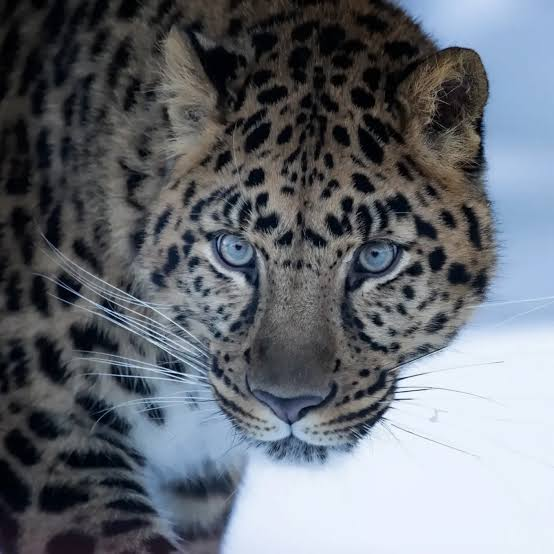

아무르 표범
시베리아·동아시아에 살고있는 산악지대 표범입니다.
멸종위기등급: CR (심각한 위기)
현제 개체수(추정): 약 120마리
멸종위기 이유: 서식지 파괴, 밀렵



시베리아·동아시아에 살고있는 산악지대 표범입니다.
멸종위기등급: CR (심각한 위기)
현제 개체수(추정): 약 120마리
멸종위기 이유: 서식지 파괴, 밀렵
멕시코만 서식하는,가장 희귀한 돌고래입니다.
멸종위기등급: CR (심각한 위기)
현제 개체수(추정): 약 10마리
멸종위기 이유:그물에 걸려 죽음(어업 부작용)
중국 대나무 숲에 사는 대형 곰입니다.
멸종위기등급: VU (취약)
현제 개체수(추정): 약 1800마리
멸종위기 이유: 서식지 파괴, 번식률낮음
세계에서 가장 큰 독수리이며 , 필리핀 고유종입니다.
멸종위기등급: CR (심각한 위기)
현제 개체수(추정): 약 40마리
멸종위기 이유: 서식지 파괴, 사냥

뉴질랜드 야행성 앵무새, 날지 못합니다(뚱뚱.)
멸종위기등급: CR (심각한 위기)
현제 개체수(추정): 약 250마리
멸종위기 이유: 서식지 파괴, 포식자 유입

중국 하이난 섬의 가장 희귀한 원숭이입니다.
멸종위기등급: CR (심각한 위기)
현제 개체수(추정): 약 30마리
멸종위기 이유: 서식지 파괴
거의 멸종, 인공수정 등 복원 노력중인 코뿔소입니다.
멸종위기등급: CR (사실상 멸종)
현제 개체수(추정): 약 2마리
멸종위기 이유: 서식지 파괴, 밀렵

베트남·라오스 국경 희귀 소과 동물입니다.
멸종위기등급: CR (심각한 위기)
현제 개체수(추정): 약 100~200마리
멸종위기 이유: 서식지 파괴, 밀렵

북미 최대맹금류, 복원사업으로 개체수 증가 중
멸종위기등급: CR (심각한 위기)
현제 개체수(추정): 약 500마리
멸종위기 이유: 서식지 파괴, 납중독